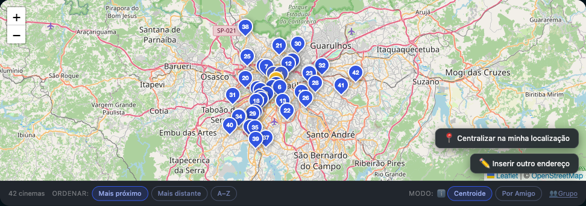
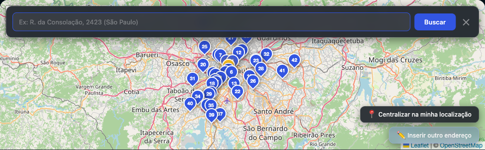
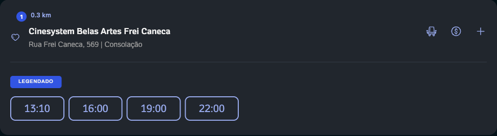
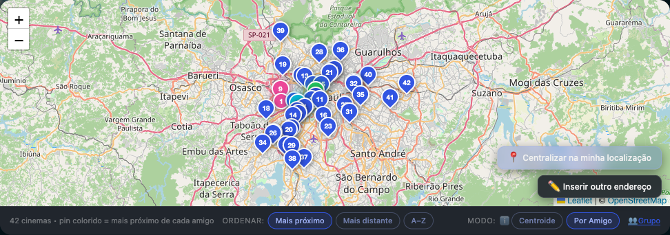

Mapa embutido
Painel integrado ao layout do ingresso.com, com pins numerados por proximidade.
Extensão Chrome
Mapa interativo embutido na página do filme. Veja todos os cinemas, compare distâncias e descubra a sala ideal — sozinho ou com amigos.
Quer testar antes do lançamento? Instale manualmente ou leia o guia de uso.

A extensão se integra ao layout do ingresso.com e usa os dados que já estão na página — sem cadastro, sem servidor nosso.
Painel integrado ao layout do ingresso.com, com pins numerados por proximidade.
Reordena a lista de cinemas e mostra a distância em km em cada card.
Use geolocalização, digite um endereço ou cole um link do Google Maps.
Adicione endereços de amigos e compare cinemas pelo centroide ou por pessoa.
Permita a geolocalização ou busque um endereço. A busca respeita a cidade selecionada no ingresso.com.

Cada cinema recebe um badge numerado. A lista é reordenada para mostrar os mais próximos primeiro.

Adicione endereços de amigos e veja o cinema ideal para cada um — ou o ponto médio do grupo.

Enquanto aguardamos a publicação oficial, desenvolvedores e early adopters podem carregar a extensão localmente.
chrome://extensions e ative o Modo do desenvolvedor.
Privacidade em primeiro lugar. A extensão não envia seus dados para servidores dos desenvolvedores. A localização é usada apenas para calcular distâncias no seu navegador.
Política de privacidade